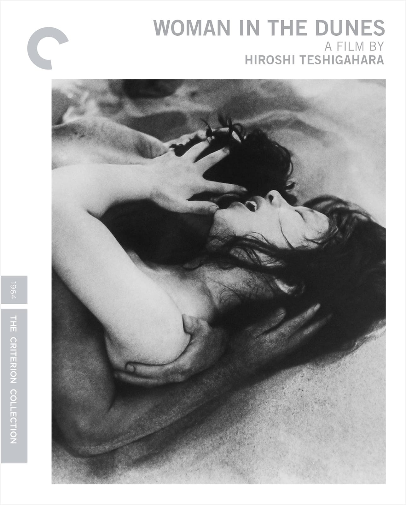

Back to the
previous page
Back to the
previous pageJapanese New Wave
A few important Japanese New Wave directors and their films;
- Shōhei Imamura and his film Akai Satsui

Shōhei Imamura was a Japanese film director. His main interest as a filmmaker lay in the depiction of the lower strata of Japanese society. A key figure in the Japanese New Wave, who continued working into the 21st century, Imamura is the only director from Japan to win two Palme d'Or awards.
- Nagisa Oshima and his film Shinjû: Ten no Amijima

Nagisa Oshima's career extends from the initiation of the "Nuberu bagu" (New Wave) movement in Japanese cinema in the late 1950s and early 1960s, to the contemporary use of cinema and television to express paradoxes in modern society.
- Hiroshi Teshigahara and his film Suna no onna
Hiroshi Teshigahara was born the son of Sofu Teshigahara who was the founder of the Sogetsu School of Ikebana (flower arrangement). In 1950, he graduated from the Tokyo National University of Fine Arts and Music in oil painting. In 1958, he became the director of Sogetsu Art Centre and took a leading role in avant-garde activities in many fields of art. Beginning in 1980, acting as movie director, he was the Iemoto (Headmaster) of the Sogetsu School of Ikebana.